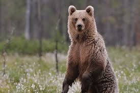

Oso Pardo
 En España, el oso pardo, específicamente la subespecie ibérica (Ursus arctos pyrenaicus), se encuentra principalmente en la Cordillera Cantábrica y los Pirineos, donde se han dado pasos importantes en su conservación, aunque aún se considera una especie en peligro.
Amenazas
La pérdida de hábitats naturales y el furtivismo son las principales amenazas para los osos pardos ibéricos. WWF España reclama mayor transparencia y acción para evitar muertes intencionadas o accidentales de osos pardos.